SRAM부터 NAND까지, 각 계층이 왜 그렇게 생겼고 왜 그 자리에 있는지를 셀 구조와 면적, 공정, 표준의 물리적 근거로 설명합니다. "위로 갈수록 빠르고 비싸다"에서 멈추지 않는 것이 목표입니다.
이 모음집의 출발점
메모리 계층은 보통 피라미드 한 장으로 설명됩니다. 위로 갈수록 빠르고 비싸고 작다는 것입니다. 이 설명은 HBM 앞에서 무너집니다. HBM은 DRAM보다 위에 놓이지만 셀은 같은 1T1C이고 접근 지연도 동급입니다. 상위인 근거는 대역폭과 결합도 두 축뿐이고, 용량과 비트당 비용에서는 오히려 DRAM에 밀립니다.
HBF는 더 극단적입니다. 접근 지연으로 정렬하면 NAND 옆에, 대역폭으로 정렬하면 HBM 옆에 놓입니다. 한 계층이 정렬 기준에 따라 다른 칸으로 이동한다면, 이상한 쪽은 계층이 아니라 정렬이 1차원이라는 가정입니다.
그래서 이 모음집은 계층을 다섯 축의 복합으로 정의합니다. 접근 지연(A1), 대역폭(A2), 용량(A3), 비트당 비용(A4), 프로세서 결합도(A5)입니다. 이후 모든 문서가 이 좌표를 공유합니다.
| 축 | 단위 | 무엇이 지배하는가 |
|---|---|---|
| A1 접근 지연 | ns / µs | 셀 구조. 패키징으로 바꿀 수 없음 |
| A2 대역폭 | GB/s – TB/s | 버스 폭 × 전송률. 패키징으로 개선 가능 |
| A3 용량 | MB – TB | 셀 밀도와 적층 수 |
| A4 비트당 비용 | $/GB | 셀 면적, 공정 난도, 수율, 패키징 비용의 합 |
| A5 결합도 | 온다이 / 인터포저 / PCB / PCIe | 물리적 거리. 지연과 전력, 신호 무결성에 동시 작용 |
A1은 셀 구조가 지배하므로 패키징으로 바꿀 수 없고, A2와 A5는 패키징으로 바꿀 수 있습니다. HBM은 이 대비를 정면으로 이용한 계층이고, HBF는 같은 전략을 NAND 셀에 적용한 뒤 A1이 끝내 따라오지 않아 생긴 문제를 다루는 계층입니다.
각 항목은 해당 문서에서 근거와 함께 전개됩니다
셀은 동일한 1T1C이고 지연도 동급입니다. 대역폭 격차 약 40배 중 핀당 전송률 차이는 1.3배 남짓이고, 나머지는 전부 버스 폭 32배에서 나옵니다. 신호를 더 빨리 보내는 기술이 아니라 더 많은 선으로 동시에 보내는 기술입니다.
03-hbm.mdITRS 시절 가정치입니다. 현행 D1z와 D1a는 10 fF 미만이고 D1c는 5 – 6 fF 전망입니다. 과거에는 약 30 fF를 세대와 무관하게 유지하는 것이 원칙이었으나, 업계는 커패시턴스 자체를 낮추는 쪽으로 선회했습니다.
02-dram.mdFMS 2026에서 확인됐습니다. 같은 TLC로 비교하면 332층 BiCS10이 29.1 Gb/mm², 400층 이상인 삼성 V10이 약 28 Gb/mm²입니다. 층수가 17% 적은 쪽이 밀도에서 4% 앞섭니다.
05-nand.md온다이 ECC는 SEC이지 SECDED가 아닙니다. 1차 자료는 일관되게 단일 정정만을 말하고, 표준 자신이 앨리어싱 규정으로 시스템 ECC의 존재를 전제합니다.
07-reliability.md못 버티는 다이는 출하되지 않으므로 공개된 리텐션 분포는 좌측이 잘려 있습니다. 공정이 좋아지면 64 ms가 늘어난다는 기대는 여기서 어긋납니다. 그리고 DDR5는 64 ms가 아니라 32 ms입니다.
07-reliability.mdSRAM의 3D 적층 캐시, DRAM의 3D 전환, HBM의 하이브리드 본딩, HBF의 CBA, NAND의 CBA와 BV 구조. 2026년 메모리 공정의 단일 서사가 이것입니다.
06-process.md
계층 문서 여섯 편, 횡단 챕터 세 편, 부록 셋, 그리고 출처 인덱스
00을 건너뛰지 마십시오. 나머지 문서가 전부 여기서 정의한 다섯 축을 좌표로 씁니다. 계층 문서는 동일한 10항목 템플릿을 따르므로, 특정 관심사만 비교하려면 각 문서의 같은 번호 절을 가로로 읽으면 됩니다.
06과 07, 08은 앞의 다섯 문서가 남긴 것이 모이는 세 횡단 챕터입니다. 세 챕터가 묻는 것은 각각 "왜 만들기 어려운가", "무엇이 어떻게 틀리는가", "만든 것 중 무엇을 파는가"입니다.
이 모음집이 가장 공을 들인 부분
반도체 수치는 6개월이면 낡습니다. 그래서 모든 수치에 출처 등급과 확인일을 붙이고, 확정된 사실과 그렇지 않은 것을 문장 단위로 구분합니다.
| 등급 | 정의 | 집필 시 취급 |
|---|---|---|
T0 | 표준화 기구 원문 (JEDEC, OCP, CXL Consortium) | 무조건 우선. 단 유료 문서 제약이 있음 |
T1 | 제조사와 장비사 공식 발표 | 마케팅 표현을 걷어내고 수치만 사용 |
T2 | 동료평가 논문과 학회 발표 | DOI 또는 arXiv ID 명시 |
T2.5 | TechInsights 다이 분석 | 수치 근거로는 T1급 신뢰. 상당수가 유료 |
T3 | 분석기관과 기술 매체 | 교차 확인 후 사용 |
T4 | 개인과 기업 블로그, 위키 | 구조 이해용 참고만. 수치 인용 금지 |
등급만으로 부족할 때는 한정 표기를 함께 답니다.
T0 (초안), T1 (특허), 단일 출처, 2차 인용,
스니펫, 원문 미확인입니다.
수치 옆에 배지가 있으면 그 값은 아직 확정이 아닙니다. 배지는 아래 다섯 종만 씁니다.
확보하지 못한 근거는 공백으로 명시합니다. DRAM 커패시터의 세대별 종횡비는 공개 자료가 없고, 셀 커패시턴스와 리텐션 마진을 잇는 정량 관계도 확보하지 못했습니다. 수율 쪽은 공백이 더 넓어서, DRAM 예비 행과 열의 비율, HBM 실제 스택 수율, 번인 조건은 제조사 공식 수치가 아예 없습니다.
그럴듯한 값으로 채우는 대신 목록으로 남겼습니다. 어느 수치가 단일 출처인지, 원문을 못 봤는지, 위원회 초안인지도 각주에 표시되어 있습니다.
SOURCES.md의 9절에 미확정과 추적 항목 전체가 정리되어 있고, 각 행에 마지막 재확인 날짜가 붙어 있습니다. 널리 인용되지만 원문과 어긋나는 사례를 모은 오인용 함정 표도 같은 문서에 있습니다.
확산 모델을 쓰지 않은 이유
이 모음집에는 그림의 수치가 본문과 글자 단위로 일치해야 한다는 규약이 있습니다.
확산 모델은 13.75 ns나 0.087 Gb/mm²/층 같은 라벨을 정확히 렌더링하지 못하고,
로그 스케일 위치를 계산으로 맞춰 주지도 못합니다. 그래서 33건 전부를 플랫 벡터 SVG로 직접 작성했습니다.
| 규약 | 내용 |
|---|---|
| 테마 대응 | 배경이 투명하고 다크와 라이트 모드에 자동 대응합니다 |
| 계층색 고정 | 같은 계층은 어느 그림에서나 같은 색입니다. 비교가 성립하려면 필요한 조건입니다 |
| 색각 대응 | 적록과 청황 색각 이상에서 구분되는 팔레트를 쓰고, 색만으로 정보를 전달하지 않습니다 |
| 불확실성 표기 | 미확정과 미공개, 벤더 목표치는 그림에서도 점선 테두리와 배지로 구분합니다 |
| 없는 데이터 | 확인되지 않은 값은 그리지 않습니다. Row Hammer 추이 그림에 DDR5가 없는 이유입니다 |
제작 규약은 IMAGE-GUIDELINE.md, 건별 제작 사양은 IMAGE-MANIFEST.md에 있습니다. 제조사 이미지나 논문 도판을 전재하거나 트레이스하지 않았습니다.
반도체 수치는 6개월이면 낡습니다. 이 모음집은 그 전제 위에서 설계되었습니다
2차 인용으로 표기했습니다.
각 문서 상단에 최종 검증 날짜가 있습니다. 인용 전에 날짜부터 확인하십시오.
시황과 가격, 시장 규모는 본문에서 배제하고 부록 C로 격리했으므로, 부록이 낡아도 본문 00부터 08까지는 유효합니다.
의도적으로 다루지 않은 주제
PIM과 NMP는 계층 축과 직교하는 별개 주제여서 제외했습니다. MRAM과 ReRAM, PCM 같은 신소자는 현행 다섯 계층 상용 제품으로 범위를 한정하느라 뺐습니다. 컨트롤러 펌웨어와 FTL 내부 알고리즘은 소자와 패키징에 초점을 맞추면서 제외했고, 개별 제품 벤치마크는 제품 리뷰가 아니라 구조 설명이 목적이므로 다루지 않습니다.